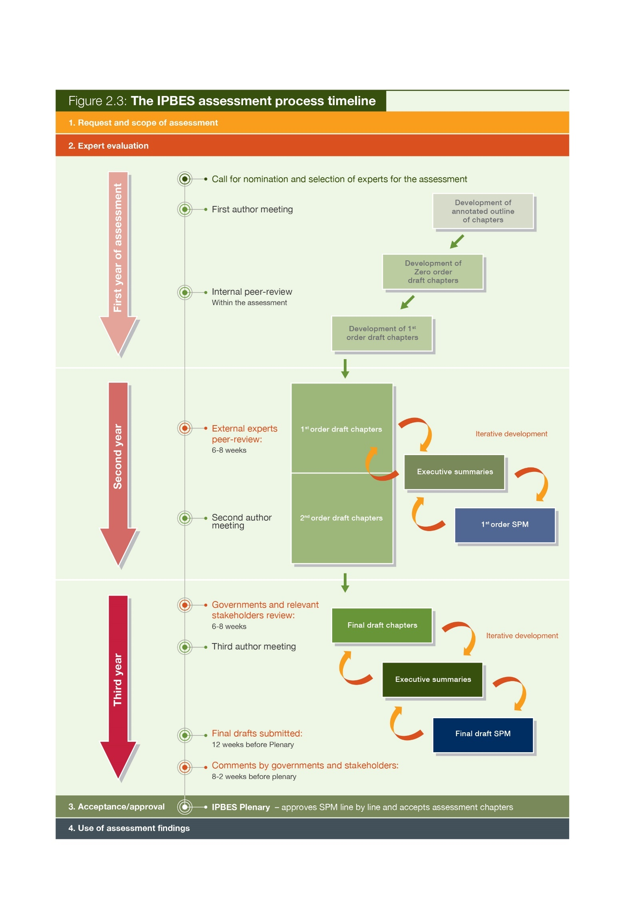
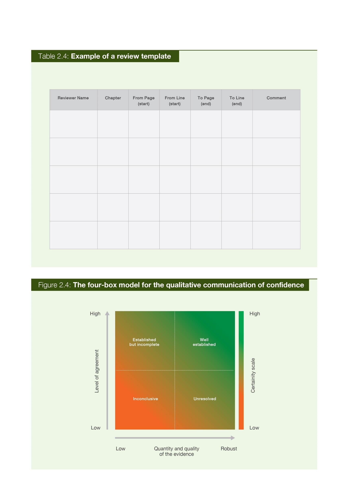
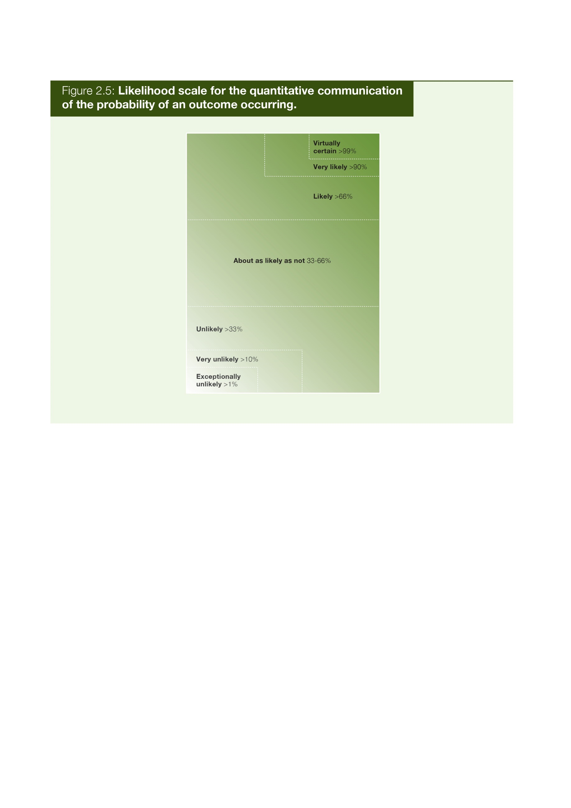
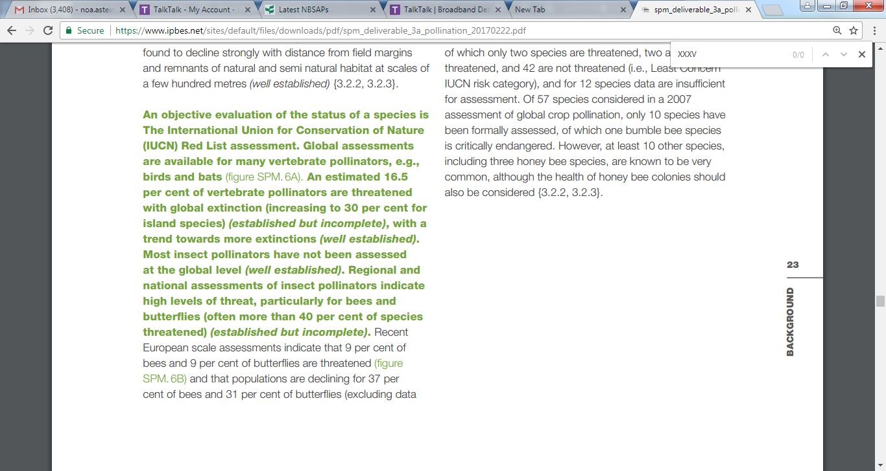
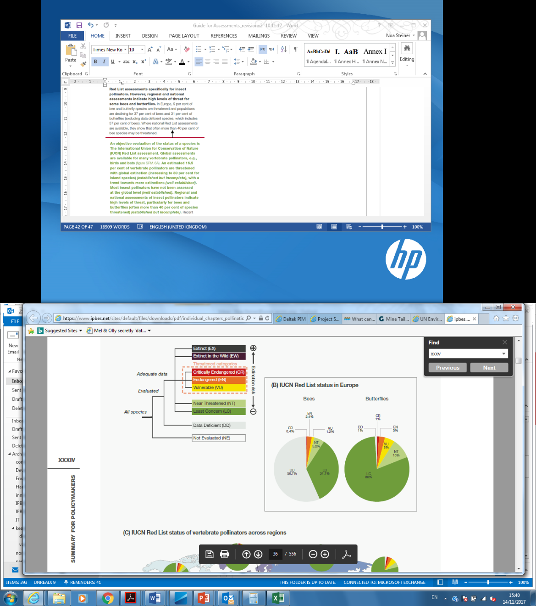
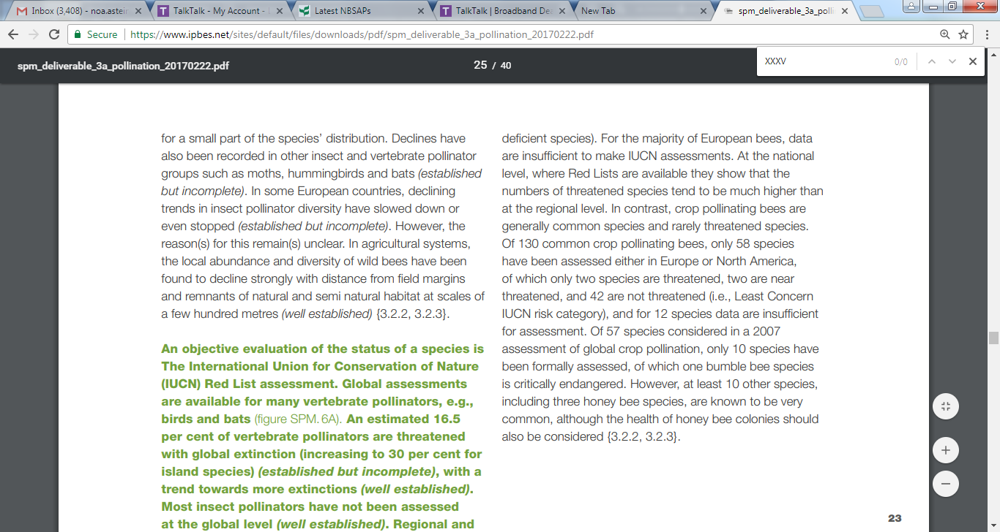
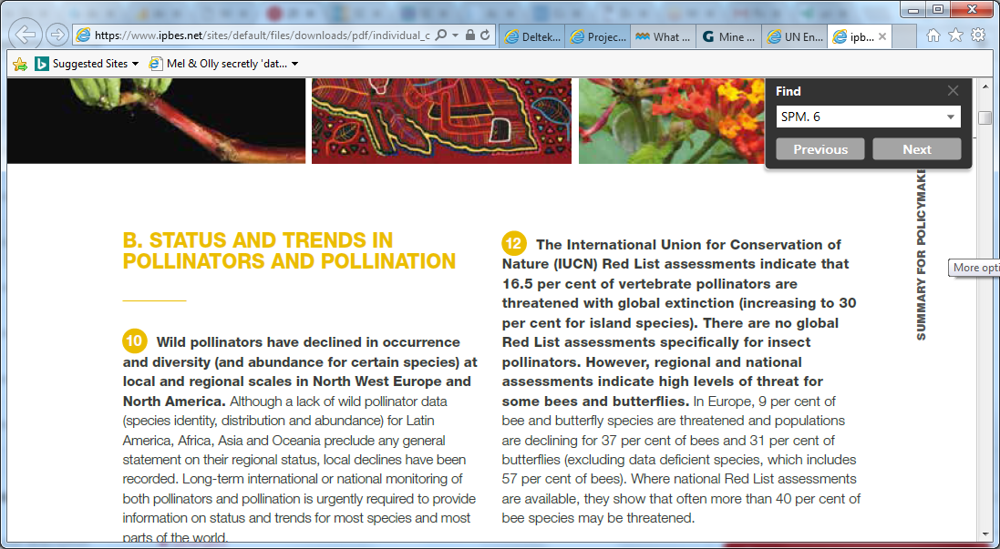

The IPBES Guide on the production of assessments
Expert evaluation of the state of knowledge
1 Nomination of experts by members and observers, and selection by the MEP
The Rules of Procedure for IPBES set out the nomination process for the different roles within an IPBES assessment (see IPBES/2/17 and decision IPBES-4/3)1 and are summarized in Table 1. The chair of IPBES, following the Plenary which requested the undertaking of an assessment, issues a call for nominations, explaining some of the requirements, particularly in terms of disciplines to cover all chapters of the assessment. Governments and observers are invited to nominate independent experts and fellows. From the nominations received, the MEP will select the report co-chairs, coordinating lead authors (CLA), lead authors (LA) and review editors (RE). The MEP will take the following into consideration when making these selections:
- 80% of the selected experts should be nominated by governments and 20% by an organization.
- The selection should reflect a range of scientific, technical and socio-economic views and expertise (e.g., natural and social sciences, scholars from the humanities, knowledge holders and experts in indigenous and local knowledge (ILK)).
- The selection should have a good geographic representation, with appropriate representation of experts from developing and developed countries and countries with economies in transition.
- The diversity of knowledge systems (including indigenous and local knowledge) should be represented.
- The selection should aim at reaching gender balance.
While every effort should be made to engage experts on the author teams from the relevant regions, with regards to chapters or assessments that deal with those specific regions, experts from other regions can be engaged if they can provide an important contribution to the assessment. If gaps in geographical, gender and expertise balances are identified, the co-chairs of the assessments, together with their respective CLAs, can identify potential additional experts to fill in these gaps. These experts will then be retroactively nominated following the approved procedure for filling gaps among groups of experts approved by the fourth session of the Plenary (see IPBES/4/19 and decision IPBES-4/3).2
MEP or Bureau members that would like to participate as an expert in an assessment can be nominated for such a role, but they will have to resign from their duties as an MEP or Bureau member when accepting the new role.
The co-chairs, CLAs, LAs, REs, Fellows and Contributing Authors (CAs) have different responsibilities within a particular IPBES assessment. Each role in an Assessments not only has a specific nomination process but also has different responsibilities within a particular IPBES assessment (see Table 2.1). These roles are further described in Table 2.2.
Table 2.1 Nomination and selection processes for different roles in assessments
| Role in assessment | Nomination and selection process |
|---|---|
| The Management Committees | The management committees for the assessments consist of the co-chairs, appointed members of the MEP and Bureau, as well as representatives from the responsible technical support unit and secretariat. |
| Assessment co-chairs | Governments, the scientific community and other stakeholders are able to nominate appropriate experts for the roles of co-chairs, CLAs, LAs and REs in response to requests from the Chair of IPBES. In addition to a call for nominations, members of the MEP and Bureau will contribute, as necessary, to identify relevant experts with an appropriate diversity of expertise and disciplines, gender balance and representation from indigenous and local knowledge (ILK) holders to ensure appropriate representation from developing and developed countries and countries with economies in transition. If the pool of original nominations is not balanced enough, additional nominations can be initiated by the procedure for filling gaps among groups of experts (decision IPBES-4/3).3 Nominations will be compiled in lists that are made available to all Platform members and other stakeholders, and will be maintained by the Platform secretariat. Experts with the most relevant knowledge, expertise and experience may only be chosen once an assessment topic has been fully scoped. Every effort should not only be made to engage experts from relevant regions on the author teams for chapters that deal with specific regions, but experts from countries outside the region should also be engaged when they can provide an important contribution to the assessment. The nomination process will follow these steps:
|
| Coordinating Lead Authors (CLA) | |
| Lead Author (LA) | |
| Review Editor (RE) | |
| Fellow | The nomination process is handled by the TSU for capacity building and is made by the fellow’s home institution. A call for nominations is made by the secretariat and utilizes an online process through the IPBES website for the submission of applications. The selection of fellows is done by the management committee. |
| Expert Reviewer | Expert reviewers are self-selected and register through the IPBES website following a call for expert reviewers by the secretariat. |
| Contributing Author (CA) | The lead authors and coordinating lead authors are selected by the MEP and may enlist other experts as contributing authors to assist with the work. |
| Management Committee | There is no nomination process for the management committee as it consists of the co-chairs, a selection of MEP and Bureau members, the TSU and the secretariat. |
| Technical Support Unit (TSU) | Offers to host a TSU for an assessment are made to the Bureau. The Bureau will discuss the offers made and select a TSU. |
| The IPBES secretariat | Supports the Bureau, MEP and management committees in overseeing the production of the assessment report and the provision of support by the TSU, as well as stores and provides access to assessment related materials that are not publicly available. Other key roles include supporting the Plenary, interacting with governments and ensuring that governments and other stakeholders receive all relevant documents. |
Table 2.2 Who is who in an IPBES assessment: Roles and responsibilities
| Role | Responsibilities in the assessment | Advice for playing this role |
|---|---|---|
| The Plenary | Initiates calls for requests, scoping and assessments, as well as approves the SPM and accepts the assessment chapters. | |
| The Bureau | Oversees the policy and administrative aspects of the scoping process and the assessment process, including the preparations of the SPM, takes part in the management committee, and verifies the final draft report. | |
| The Multi disciplinary Expert Panel (MEP) | Oversees the scientific and technical aspects of the scoping process and the assessment process, selects nominated experts, takes part in the management committee, and verifies the final draft report. | |
| The Management Committee | Supports the co-chairs and assists the Bureau, MEP and the secretariat in overseeing assessment processes, including in the filling of expertise gaps and in handling non-performing authors. The management committees of the assessments consist of the co‑chairs of the assessment, appointed members of the MEP and Bureau, and representatives of the responsible technical support unit and secretariat. The management committee is chaired by the co-chairs of the relevant assessment and is responsible for supporting the co‑chairs of the relevant assessment in the day-to-day operations required for the implementation of the respective deliverable, where the substance of the matter to be addressed does not warrant alerting the MEP, Bureau or other entity responsible according to the IPBES procedures. The management committee stays up to date with all developments of the assessment processes and also ensures that the processes adhere to the IPBES rules of procedure. Where the management committee cannot agree on an issue, or the scope of the matter to be addressed warrants a decision by the responsible body, the matter will be referred by the management committee to the responsible body. Examples of management committee responsibilities include:
|
Hold regular meetings by teleconference or other appropriate means at least once every two months. Be up-to-date with the latest version of the assessment report (zero order draft, First (1st)order Draft, Second (2nd) order draft or final draft). |
Assessment co-chair |
The role of co-chair is normally shared between two and sometimes three experts. An assessment co-chair’s role is to assume responsibility for overseeing the preparation of an assessment report, as well as its SPM, and ensuring that the report is completed to a high standard and addresses the key scoping questions. A co-chair is senior in their field and has experience in coordinating the work of experts. Besides overseeing the development of the assessment, the co-chair can also contribute text to one (or more) chapters. The co-chair is also responsible for collaborating with the coordinating lead authors to ensure that the chapters are delivered in a timely manner and with a high standard, and that they address the key scoping questions. The co-chair will ensure that the chapters feed into each other and that their messages are not contradicting. The co-chair participates in the setting of the agenda and the chairing of the author meetings. He/ she will work together with the management committee of the assessment to ensure that issues within the assessment are being solved and that the assessment is prepared according to the decisions and guidelines of IPBES. Once the assessment and SPM are finalized, co-chairs will also engage in the outreach for those deliverables. Assessment co-chairs are expected to contribute 25 to 30% of their time to the coordination of their dedicated assessment. They are expected to participate in each author meeting. |
Get up to speed with the IPBES rules and procedures, as well as other assessments and deliverables. Read other relevant assessments on biodiversity and ecosystem services (available in the Catalogue of Assessments). Organize regular skype meetings with chapter CLAs to stay in touch with the development of the chapters. Invest in building trust amongst the authors, as well as a sense of pride and ownership of the assessment process. Review and check the key messages of the chapters in order to prepare the SPM. |
| Coordinating Lead Author (CLA) | A coordinating lead author’s role within an IPBES assessment is to assume overall responsibility for coordinating a chapter of the assessment report. Coordinating lead authors are lead authors who, in addition to their responsibilities as a lead author, have the responsibility of ensuring that the chapters of a report are completed to a high standard, are collated and delivered to the report co-chairs in a timely manner, and conform to any overall standards of style set for the document. They are thus to coordinate the work of the lead authors, fellows and contributing authors involved in their chapter to ensure the quality of the chapter as a whole. Coordinating lead authors also play a leading role in ensuring that any cross-cutting scientific, technical or socio-economic issues, of significance to more than one section of a report, are addressed in a complete and coherent manner and reflect the latest information available. CLAs coordinate the pulling out of key messages from their chapter and the writing of the executive summary of the chapter. They also contribute to the writing of the SPM. CLAs are expected to contribute 20% of their time to the coordination of their chapter. They are expected to participate in the author meetings and to coordinate the work of their chapter at the meeting. |
Organize regular communication between the different LAs and fellows in your chapter. Review the text received and structure information to create a flowing chapter. Put deadlines for the author team to ensure the timely delivery of the different order drafts. Identify gaps in the chapter author team and search for potential CAs to fill those gaps. |
| Lead Author (LA) | The role of a lead author is to assume the responsibility of producing designated sections or parts of chapters that respond to the work programme of the Platform, on the basis of the best scientific, technical and socio-economic information available. Lead authors typically work in small groups that together are responsible for ensuring the various components of their sections are put together on time, are of a uniformly high quality and conform to any overall standards of style set for the document. The essence of the lead authors’ role is to synthesize material drawn from the available literature and fully-justify unpublished sources, contributing authors, stakeholders and experts where appropriate. Lead authors can identify contributing authors who can provide additional technical information or graphics on specific subjects covered in the chapter. LAs are expected to contribute 15% of their time to producing relevant sections and parts to their dedicated chapters. They are also expected to participate actively in the author meetings. |
Actively participate in discussions within the chapter team about the content of the chapter. Divide tasks amongst lead authors and identify the areas that each will write about. Get familiarized with previous IPBES assessments to learn about the style and overall standards expected. Collect peer reviewed literature for the author team to use. When gaps are experienced in the chapter, consider where you could use a contributing author to fill those gaps. |
| Contributing Author (CA) | A contributing author’s role is to prepare technical information in the form of text, graphs or data for inclusion by lead authors in the relevant sections or part of a chapter. Input from a wide range of contributors is key to the success of Platform assessments. Contributions are sometimes solicited by lead authors but spontaneous contributions are also encouraged. Contributions should be supported, as far as possible, with references from peer-reviewed and internationally available literature. Contributing authors are responsible only for contributing to a specific part of the chapter and do not work on the chapter as a whole. They will be listed only as a contributing author if their input is included in the final report. Contributing authors are not formally nominated and also do not normally fill in the conflict of interest forms. They are not privy to all communication in the chapter team but work directly with the LA or CLA who is coordinating the CA’s technical input into the chapter. |
Provide technical information in concise and clear text or graphs. Provide adequate referencing from peer-reviewed materials to your contribution. Coordinate your input with the authors of the chapter to see where your contribution is best fitted and adapt it to the content of the overall chapter. Keep the confidentiality of the report in mind when being part of the author team. |
| Review Editor (RE) | Review editors are seniors in their field and may represent a range of scientific, technical and socioeconomic views. They therefore have expertise in one or more natural and/or social scientific discipline, and may represent or have expertise in indigenous and local knowledge. The review editors get involved as of the review phase of the first order draft and help the author teams to address review comments during the second and third author meeting. They also help to ensure that confidence terms are used consistently throughout the executive summary of the related chapter. In general, there will be two review editors per chapter, including its executive summary. It is also possible that an assessment has one or more overall review editor that reviews the entire report, or an additional review editor that reviews the SPM. Review editors are not actively engaged in drafting reports and may not serve as reviewers for text that they have been involved in writing. The review editors’ main tasks are: (i) to assist the MEP in identifying reviewers for the expert review process; (ii) ensure that all substantive expert and government review comments are afforded appropriate consideration; (iii) advise lead authors on how to handle contentious or controversial issues; and (iv) ensure that genuine controversies are adequately reflected in the text of the report concerned. Responsibility for the final text of the report remains with the relevant CLAs and LAs. Review editors must submit a written report to the MEP and, where appropriate, will be requested to attend a meeting convened by the MEP to communicate their findings from the review process and assist in finalizing summaries for policymakers and synthesis reports. The names of all review editors will be acknowledged in the reports. Review editors participate in the second and third author meetings. |
Get accustomed to the content of the chapter of which you are the review editor well before the second author’s meeting. Consider who would be a suitable candidate for performing the expert review. Refrain from imposing changes in the text to the author team. Review the responses from authors to comments received. Be a good sparring partner to the author team and make good judgement calls. Be open to different perspectives and world views. |
| External reviewers | External reviewers carry out the external review of the first and second order drafts of the assessment report and the SPM. They have to register as an expert reviewer in order to be able to comment on the accuracy and completeness of the s cientific/technical/socio-economic content and the overall s cientific/technical/socio-economic balance of the drafts. An expert reviewer evaluates the quality, validity and relevance of the assessment. The aim of an external review is to provide authors with constructive feedback that will help in preparing an assessment of the highest quality. Experts who are nominated by governments and observer organizations but are not selected are encouraged to contribute to the report as Externalt Reviewers. External reviewers are independent experts (i.e., experts not involved in the preparation of that particular chapter). They will be mentioned as expert reviewers in the final report. |
Comment in a constructive tone. Comment also on parts of the text that are relevant and that should stay in the text. Be specific and use full citations for relevant papers when providing suggestions for text revisions. Suggest ways to shorten text and/or display content using figures or tables. Focus on substantive issues (comments on spelling, text style and grammar are not needed). When reviewing the draft report, also take note of the original scoping document for the assessment. Comments will only be accepted in English and in the given review format. Comments are to be given within the review deadline. |
| Fellows | The IPBES fellowship programme allows early career researchers and other professionals to engage with the Platform’s activities and work alongside more experienced colleagues. Fellows are experts that are in the early stages of their careers, indicatively not older than 35 years of age or 5-10 years of experience on from obtaining their academic degree. They should be working in the area of social, economic and biological sciences, policy development, and/or indigenous and local knowledge systems. Fellows are an integral part of the IPBES assessment chapters and collaborate with the CLAs and LAs in developing sections or parts of chapters. They receive training to gain an in-depth understanding of the IPBES assessment processes. Fellows will also be paired up with a mentor for the assessment period. Fellows are expected to participate in the author meetings. |
Coordinate your role in the chapter with your mentor, as well as your chapter’s existing CLAs and LAs. Garner knowledge from other IPBES assessments. Do not be afraid to bring in new ideas or ask questions! |
| Technical support unit (TSU) | The IPBES secretariat is mandated to provide technical support to the expert working groups. Technical support needed for the development of the deliverables, including the assessments, will in principle be provided by the secretariat. In many instances however, the technical support needed exceeds the capacity of the secretariat in its planned composition and it is more cost effective when additional technical support to expert groups is provided through the establishment of technical support units. Each assessment has one dedicated technical support unit, normally hosted by a partner institution and consisting of a couple of technical and administrative staff members. Technical support units represent one avenue for involving regional hubs and regional or thematic centres of excellence in the work of the Platform. It can also happen that the technical support unit is hosted within the IPBES secretariat. In any case, the TSU works under the oversight of the secretariat to coordinate and administer the activities for the assessment expert group. Some of these main activities include:
|
Provide regular updates to both the assessment teams and the secretariat on assessment developments. Build relationships with your authors to facilitate the building of trust. Stay up to date with all IPBES relevant rules of procedures and Plenary decisions. |
| The IPBES secretariat | The IPBES secretariat supports the Bureau, MEP and management committees in overseeing the production of the assessment report, oversees the provision of support by the TSU, and stores and provides access to assessment-related materials that are not publicly available. Other key roles include supporting the Plenary, interacting with governments, and ensuring that governments and other stakeholders receive all relevant documents. |
The suggestions below are based on comments received during the Millennium Ecosystem Assessment peer review process:
- Discuss the problems and actions first. Any necessary background can come later in an appendix or in references to other sources.
- Focus on definable measures/actions and avoid the passive voice. For example, policy professionals are likely to ignore statements like “there are reasons to believe some trends can be slowed or even reversed”. If there are some opportunities for reversal, state precisely what we believe they are to the best of our knowledge.
- Statements like “...might have enormous ramifications for health and productivity...” may seem to be strong because of the word “enormous”, but they are actually politically impotent because of the word “might.” If data are used in the assessment, what do they say about what “is” happening? What can we recommend, based on the best available knowledge, about what actions would be effective?
- A statements like “there is a long history of concern over the environmental effects of fishing in coastal habitats, but the vast scope of ecological degradation is only recently becoming apparent (citation)” is a case where something strong could be said but it is weakened by putting emphasis on the late arrival of this information and knowledge “becoming apparent”. It does not matter so much when the degradation was discovered, what matters is that it was. Cite the source and say “fishing practices are causing wide‑spread destruction”.
- Do not use value-laden, flowery or colloquial language (e.g., “sleeping dragon”, “elephant in the room”, etc.).
- Statements like “we do not yet have clear guidelines for achieving responsible, effective management of natural resources” could result in a legitimate policy response of “OK, so we’ll wait until we do”. Instead, the statement could be changed to recommend what needs to be done, such as, “if clear guidelines were developed, then…”.
- Diverse formats and modes of communication, for example participatory maps, artwork and visual imagery, will be important for working with indigenous and local knowledge.
Source: Ash et al., 2010
2 Conflicts of interest
IPBES has put in place conflict of interest policy and implementation procedures to ensure that attention is paid to issues of independence and bias in order for there to be public confidence in the product and processes of IPBES.4 IPBES defines conflicts of interest and bias as any circumstances that could lead a reasonable person to either question an individual’s objectivity or believe an unfair advantage has been created. The policy further sets out the difference between conflicts of interest and bias along with rules on how the policy should be applied when including the Committee of Conflicts of Interest. Within an IPBES assessment, all co-chairs, CLAs, LAs, REs, fellows and TSU members must sign a conflict of interest form.
3 Assessment by experts
A majority of IPBES assessments will be undertaken over three years (see Figure 2.3) and the timeline for each assessment is agreed by the Plenary as part of the acceptance of the scoping report for the assessment.
The evaluation is undertaken by a geographically and gender balanced multidisciplinary group of independent experts selected on their credentials from among a group of nominees. Their interaction with government representatives, observers and stakeholders takes place at the initiation, scoping, reviewing and approval stages of the assessment.
Typically, an IPBES assessment process will consist of the development of different drafts of the technical report:
- Annotated outline
- Zero order draft
- First order draft (1st order draft)
- Second order draft (2nd order draft)
- Final draft
The development of these drafts, including the executive summaries of the chapters and the SPM, follows the chapter outline and addresses the guidance and questions set out in the approved scoping report. This process is usually supported by three author meetings and different review periods before being presented for discussion at the Plenary (see Figure 2.3). It involves an iterative and collective expert evaluation of the state of knowledge, which entails the preparation and review of the following successive draft chapters and summaries.

Table 2.3 What should happen at each step of the Stage 2 preparation and who should be involved?
| Stage | Who should be involved? | What happens? |
|---|---|---|
| First author meeting | Co-chairs, CLAs, LAs and fellows Assessment management team |
|
| Development of the zero order draft | Co-chairs, CLAs, LAs, CAs and fellows |
|
| Internal review within the assessment | Co-chairs and CLAs Assessment management team The MEP |
This review stage is internal to the assessment. It provides an opportunity to understand where the overlaps are between chapters, gaps in text and expertise. The MEP also has the opportunity to participate in this review. |
| Development of the first order draft | Co-chairs, CLAs, LAs, CAs, REs and fellows | The first order draft is a complete draft of the technically and scientifically balanced assessment, including the glossary. Each chapter should include an executive summary. Authors should have thought about graphics and either have identified existing graphics for inclusion or have identified where graphics will be developed. Assessment authors should be mindful of the language used in the preparation of the first draft and the range of scientific, technical and socio-economic evidence should be presented clearly and concisely (see Box 2.1). The REs should identify a list of potential external expert reviewers and contact them before the external review goes live. |
| External peer review | Expert reviewers Assessment management team |
The first external review process is directed at expert reviewers. These reviewers will come from a variety of institutions but will have a technical background in the content of the assessment. The secretariat sends out a notification to national focal points and observers announcing the availability of the first order draft for review. Experts register through the IPBES website and the first order draft is made available. Comments are returned to the secretariat or respective TSU in an agreed format (see section 2.3.3). Comments are collated and sent to authors of the assessment. The management team for each assessment works with authors to identify expert reviewers who are also invited by the secretariat to provide review comments. On request, the secretariat will make available any material that is referenced in the document being reviewed which is not available in international published literature. Therefore, authors should have this material available in case a request is made. The review of the first order draft runs for 6-8 weeks. Review comments and responses are posted online after the Plenary meeting that accepts the assessment report. |
| Second author meeting | Co-Chairs, CLAs, and REs Assessment management team LAs and fellows may be included but this will differ between assessments |
The main objectives of the second author meetings are to:
The second author meeting also provides an opportunity for authors to work with REs in order to receive feedback on how to use the review comments to improve the chapters. |
| Development of the second order draft and SPM | Co-chairs, CLAs, LAs, CAs, REs and fellows | The second order draft is a complete draft of the assessment, including the glossary and executive summary for each chapter and graphics. The second order draft will take into consideration comments from the expert peer review. A full draft of the SPM, including key messages and graphics, is also developed during this period. |
| External review by governments and observers | Member governments, observers and experts | The second order draft and first draft of the SPM are reviewed concurrently. Once the second order draft and draft SPM are ready, the secretariat will notify members and observers of the start of the review period. Reviewers can then register through the IPBES website and then be granted access to the relevant documents. Comments need to be returned to the IPBES secretariat in a standard format. Governments should send one integrated set of comments for each report to the secretariat through their designated national focal points. Experts should send their comments to the secretariat. Comments are then collated and sent to the relevant assessment management team. This review period runs for eight weeks. |
| Third author meeting | Co-chairs, CLAs, LAs, REs and fellows Assessment management team |
The third author meeting provides a final opportunity for authors to work face-to-face with REs and as a group of authors. The third author meeting aims to address comments received from the external review of the second order draft and to plan for the finalization of the report as well as its SPM and presentation at the Plenary. |
| F inalization of draft assessment report and SPM for the Plenary | Co-chairs, CLAs, LAs, REs and fellows | A final draft of the assessment report and SPM should be completed and submitted to the secretariat 12 weeks before the Plenary in which the SPM is agreed at. The timeline is necessary to allow for editing and translation. The SPM is translated into the six official languages of the United Nations and, prior to distribution, is checked for accuracy by the experts involved in the assessments. The final draft should reflect comments made by governments and relevant stakeholders during the second external review. If necessary, the MEP, working with authors, REs and reviewers, can try to resolve areas of major differences of opinion. Reports should describe different and possibly controversial scientific, technical and socio-economic views on a given subject, particularly if they are relevant to the policy debate. The final draft of a report should credit all report co-chairs, CLAs, LAs, contributing authors, reviewers, REs and other contributors, as appropriate, by name and affiliation at the end of the report. |
| Governments and s takeholders submit written comments on SPM | Governments and other stakeholders | Members of IPBES, governments and other stakeholders are invited to submit comments on the final drafts of the assessment report and SPM to the secretariat up to two weeks before the Plenary. Comments should be submitted in the common format (see section 2.3.3). Comments are collated by the secretariat and sent to the relevant assessment teams. Upon receiving the comments, authors might like to prepare alternative text or responses to address the comments should they be discussed at the Plenary. Authors should not make direct changes to the text of the documents at this point. |
| Plenary discussion on SPM | The Plenary, co-chairs, CLAs and TSU | At the Plenary, the SPM is agreed line by line. Members must also make interventions on comments provided to the secretariat in advance or amendments to the text cannot happen. The co-chairs and CLAs are present during the Plenary discussions to provide responses and/or alternative wording. |
4 Peer review process
Within an IPBES assessment there are two external review processes:
- Independent external peer review of the first order draft: Experts with relevant knowledge and credentials regarding the assessment, but not involved in the assessment, will be invited to critically review one or more chapters of the first order draft.
- Independent external peer review, review by governments and other stakeholders: Governments, observers and any interested external expert can provide comments on the second order draft and the first order draft of the SPM.
IPBES has three governing principles for their review process:
- Provide expert advice: Seek the best scientific and technical guidance.
- Ensure comprehensive independent representation: Invite responses from all countries and stakeholder groups.
- Follow a transparent and open process: Make all comments and author responses received available online.
The Chair of the secretariat will issue a call for external comments and the draft chapters will be placed online in a password protected area. Experts, governments and stakeholders willing to make comments will register and commit to keep the documents confidential before receiving the texts for review. Review comments are submitted to the relevant assessment technical support units using a standard format (see Table 2.4). This allows for comments to be easily attributed to sections, pages and lines of the text and can be dealt with in an efficient manner.
5 Developing executive summaries for chapters of an assessment report
An executive summary is, in principle, located at the start of each chapter to outline its key findings.
These summaries are crucial to communicate the outcomes of the assessment to its primary audience: members of IPBES, governments, observers and all other stakeholders. The executive summaries also provide:
- confidence statements in support of each key finding (see section 2.3.6);
- links to sections in the full chapters that contain relevant supporting evidence and literature (traceability of findings);
- input to the SPM; and
- an explicit link between the SPM key findings and the sections within the full technical report providing supporting evidence (a traceable, evidence ‘paper trail’).
The SPMs need to be written clearly, concisely and using simple language. This will facilitate effective communication of the key findings. Executive summaries are technical in nature and are based on the analysis set out in the chapter. They are not the same as an abstract of a scientific paper, but they should be a synthesis analysis and collective expert judgement of the chapter’s findings. One of the key differences between the executive summaries and the SPM is moving from setting out the technical facts to blending and synthesizing the findings from different chapters into policy-relevant messages. A key finding in the SPM should be readily traceable back to a main finding(s) in an executive summary that in turn should be readily traceable back to a section(s) of the chapter text, which should be traceable, where appropriate, to the primary literature through references. References to the relevant executive summary statement within the SPM are included in curly brackets (e.g., {1.2}), see Box 2.2 for examples.
Many wild bees and butterflies have been declining in abundance, occurrence and diversity at local and regional scales in North-West Europe and North America (established but incomplete); data for other regions and pollinator groups are currently insufficient to draw general conclusions, although local declines have been reported. At a regional level, declines in the diversity of bees and pollinator-dependent wild plants have been recorded in highly industrialized regions of the world, particularly Western Europe and Eastern North America, over the last century (well established). […] In agricultural systems, the local abundance and diversity of wild bees have been found to decline strongly with distance from field margins and remnants of natural and semi natural habitat at scales of a few hundred metres (well established) {3.2.2, 3.2.3}. Source: The Pollinators, Pollination and food production assessment SPM p21-23
The number of managed western honey bee hives is increasing at the global scale, although seasonal colony loss is high in some European countries and in North America (well established) (figure SPM.5). Colony losses may not always result in irreversible declines, as losses can be mitigated by beekeepers splitting colonies to recover or even exceed seasonal losses. The seasonal loss of western honey bees in Europe and North America varies strongly by country, state and province and by year, but in recent decades (at least since the widespread introduction of Varroa) has often been higher than the 10-15 per cent that was previously regarded as normal (established but incomplete). Data for other regions of the world is largely lacking {2.4.2.3, 2.4.2.4, 3.3.2, 3.3.3, 3.3.4, 3.3.5}. Source: The Pollinators, Pollination and food production assessment SPM p.21
Commercial management, mass breeding, transport and trade in pollinators outside their original ranges have resulted in new invasions, transmission of pathogens and parasites and regional extinctions of native pollinator species (well established). Recently developed commercial rearing of bumble bee species for greenhouse and field crop pollination, and their introduction to continents outside of their original ranges, have resulted in biological invasions, pathogen transmission to native species and the decline of congeneric (sub-)species (established but incomplete). A well-documented case is the severe decline in and extirpation from many areas of its original range of the giant bumble bee, Bombus dahlbomii, since the introduction and spread of the European B. terrestris in southern South America (well established) {3.2.3, 3.3.3,3.4.32, 3.4.3}. The presence of managed honey bees and their escaped descendants (for example African honey bees in the Americas) have changed visitation patterns to the native plants in those regions (unresolved) {3.2.3, 3.3.2, 3.4.2, 3.4.3}. Better regulation of the movement of all species of managed pollinators around the world, and within countries, can limit the spread of parasites and pathogens to managed and wild pollinators alike and reduce the likelihood that pollinators will be introduced outside their native ranges and cause negative impacts (established but incomplete) {6.4.4.2}. Source: The Pollinators, Pollination and food production assessment SPM, p.28
Chapter 1 of an IPBES assessment is often introductory in nature and reflects the scene-setting objective of this chapter. Therefore, its executive summary will differ slightly from the other chapters in having an executive summary based on ‘key messages’ rather than ‘key findings’.
As a guideline, each chapter should preferably aim for an executive summary of up to 10-12 key findings and no more than 1,500 words. This will also vary depending on the nature of the chapter. The final IPBES pollination assessment wrote between 4- 21 key findings for each chapter (an average of 12 key findings per chapter). An example of a key finding from an executive summary of a chapter can be found in Box 2.3.
Many wild bees and butterflies have been declining in abundance, occurrence and diversity at local and regional scales, as it has been recorded in North West Europe and North America (established but incomplete). Loss of pollinators has negative impacts on the reproduction of wild plants (established but incomplete). In agricultural systems, the local abundance and diversity of wild bees have been found to decline strongly with distance from field margins and remnants of natural and semi natural habitat at scales of a few hundred metres (well established) (3.2.2, 3.2.3).
6 Using confidence terms
When we talk about confidence in assessments in relation to knowledge, we are referring to how assured experts are about the findings (data and information) presented within their chapters. Low confidence describes a situation where we have incomplete knowledge and therefore cannot fully explain an outcome or reliably predict a future outcome, whereas high confidence conveys that we have extensive knowledge and are able to explain an outcome or predict a future outcome with much greater certainty.
6.1 Why does our communication of confidence matter in IPBES assessments?
Knowledge and scientific data about the natural world and the influence of human activities are complex. There is a need to communicate what the assessment author teams have high confidence in as well as what requires further investigation to allow decision-makers to make informed decisions. Furthermore, by following a common approach when applying confidence terminology within an assessment, authors are able to increase consistency and transparency.
IPBES assessments will use specific phrases known as “confidence terms” in order to ensure consistency in the communication of confidence by author teams. What confidence term is used will depend on the author team’s expert judgement on the quantity and quality of the supporting evidence and the level of scientific agreement. IPBES assessments use a four-box model of confidence (see Figure 2.5) based on evidence and agreements that give four main confidence terms: “well established” (much evidence and high agreement), “unresolved” (much evidence but low agreement), “established but incomplete” (limited evidence but good agreement) and “inconclusive” (limited or no evidence and little agreement).
The following guidance will discuss where confidence terms must be applied in the IPBES assessment reports, how to select the appropriate term to communicate the author team’s confidence and how to present the confidence terms in the text.
Confidence terms should always be used in two key parts of an assessment: 1. They should be assigned to the key findings in the executive summaries of the technical chapters in an assessment report (see Box 2.2), and 2. For both key messages and key findings of the SPMs (see Box 2.3).
6.2 How to do I select confidence terms?
Once the author team has identified the chapter’s key messages and findings, in order to present these in the executive summary or SPM, it is mandatory to evaluate the quality and quantity of associated evidence and scientific agreement. Author teams will always be required to make qualitative assessments of confidence based on expert estimates of agreements and evidence.
Depending on the nature of the evidence supporting the key message or finding, quantitative assessments of confidence may also be possible. Quantitative assessments of confidence are estimates of the likelihood (probability) that a well-defined outcome will occur in the future. Probabilistic estimates are based on statistical analyses of observations or model results, or both, combined with expert judgment. However, it may be that quantitative assessments of confidence are not possible in all assessments due to the nature of the evidence available.
It is not mandatory to apply confidence terms throughout the main text of the assessment report. However, in some parts of the main text, in areas where there are a range of views that need to be described, confidence terms may be applied where considered appropriate by the author team. In order to avoid confusing readers, in no case should the terms be used colloquially or casually. Use these terms if you have followed the recommended steps for assessing confidence.
6.3 Qualitative assessment of confidence
This section discusses the process and language that all author teams must apply to evaluate and communicate confidence qualitatively. The following factors should be considered to evaluate the validity of the message or finding: the type, quantity, quality and consistency of evidence (the existing peer‑reviewed literature and grey literature, etc.), as well as the level of agreement (the level of concurrence in the data, literature and amongst experts, not just across the author team). The author team’s expert judgement on the level of evidence and agreement should then be used to apply a confidence term as described in Figure 2.4:
- Inconclusive – existing as or based on a suggestion or speculation; no or limited evidence.
- Unresolved – multiple independent studies exist but conclusions do not agree.
- Established but incomplete – general agreement although only a limited number of studies exist but with no comprehensive synthesis, or the studies that do exist imprecisely address the question.
- Well established – comprehensive meta-analysis or other syntheses/multiple independent studies that agree.

Figure 2.4. The four-box model for the qualitative communication of confidence. Confidence increases towards the top-right corner as suggested by the increasing strength of shading.
Note: ‘well-established’ can be further subdivided into ‘very well established’ and ‘virtually certain’.
Source: IPBES, 2016.
The well-established box in Figure 2.4 may be further subdivided in order to give author teams the flexibility to emphasize key messages and findings that the author team have very high confidence in:
- Very well established – very comprehensive evidence base and very low amount of disagreement.
- Virtually certain – very robust data covering multiple temporal and spatial scales and almost no disagreement.
The qualitative confidence terms discussed in this section should not be interpreted probabilistically and are distinct from “statistical significance”.
Virtually certain will not be used by the author teams frequently in the assessment report. The confidence terms used to communicate high confidence are intended to provide authors with the flexibility to emphasize issues that may be considered as fact by the scientific community but not by the non-scientific community (decision-makers, media and the general public). In most cases it may be appropriate to describe these findings using overwhelming evidence and agreements as statements of fact without using confidence qualifiers.
Similarly, inconclusive may also be used infrequently, but is intended to provide authors with the flexibility to emphasize issues that are not established in science but that are important to policymakers or might have been highlighted by a different audience.
The degree of confidence in findings that are conditional on other findings should be evaluated and reported separately.
When evaluating the levels of evidence and agreements for a statement, it is important to standardize the use of the terms within and across the author teams and, when possible, across the assessment in order to ensure their consistent use. The use of the discussed confidence terms can be standardized by taking key messages and findings in the executive summaries and discussing, as an author team, what terms should be applied and the reasons why. When appropriate, consider using formal elicitation methods to organize and quantify the selection of confidence terms.
Be aware of the tendency for a group to converge on an expressed view and become overconfident in it. One method to avoid this would be to ask each member of the author team to write down his or her individual assessment of the level of confidence before entering into a group discussion. If this is not done before a group discussion, important views and ranges of confidence may be inadequately discussed and assessed. It is important to recognize when individual views are adjusting as a result of group interactions and allow adequate time for such changes in viewpoint to be reviewed (Mastrandrea et al. 2010). Whichever approach is taken, traceable accounts should be produced and recorded to demonstrate how confidence was evaluated.
It is important to carefully consider how the sentences in the key messages and findings are structured because it will influence the clarity with which we communicate our understanding of the level of confidence. For example, sometimes the key finding combines an element that is well-established with one that is established but incomplete. In this case it can be helpful to arrange the phrasing so that the well-established element comes first and the established but incomplete element comes second, or as a separate sentence. Avoid the use of unresolved and established but incomplete where possible by writing or rewording key messages and findings in terms of what is known rather than unknown. Author teams should focus on presenting what is well-established as far as possible in order to make it clear to decision-makers what is known. Assigning confidence terms to our key findings will therefore often require that we re-write sentences, rather than simply adding the terms to existing text.
6.4 Quantitative assessment of confidence
This section discusses the process and language that author teams may wish to apply in order to evaluate and communicate the confidence that an outcome will occur quantitatively. Likelihood expresses a probabilistic estimate of the occurrence of a single event or of an outcome within a given range. Probabilistic estimates are based on statistical analyses of observations or model results, or both, combined with expert judgment.
When sufficient probabilistic information is available, consider ranges of outcomes and their associated probabilities with attention to outcomes of potential high consequence. The author team’s expert judgement on the magnitude of the probability should then be used to apply a likelihood term (see Figure 2.5).

Figure 2.5. Likelihood scale for the quantitative communication of the probability of an outcome occurring
Note: Extreme levels of probability are nested within the broader levels of “likely” and “unlikely”. Source: modified from Mastrandrea et al. 2010.
Categories in Figure 2.5 can be considered to have nested boundaries. For example, describing an outcome as likely or very likely conveys in both cases that the probability of this outcome could fall within the range of 95% to 100% probability. However, in the case of likely, the larger range (66-100%) indicates a higher degree of confidence than very likely (90-100%). In making their expert judgement, author teams should start at about as likely as not and consider whether there is sufficient quantitative information available to assign either a likely or unlikely probability range. Only after thinking about this initial range should the author teams consider whether there is sufficient evidence to move to more extreme levels of probability.
Author teams should note that using a likelihood term for a specific outcome implies that alternative outcomes have the inverse likelihood, e.g., if an outcome is likely (a range of 66-100%) then that would imply that other outcomes are unlikely (0-33% probability).
If the author team consider that sufficiently robust information is available with which to make a ‘best estimate’ of the probability of the occurrence of an event, then it is preferable to specify the full probability range (e.g., 90-95%) in the text without using the terms in Figure 2.5. Also, about as likely as not should not be used to communicate a lack of knowledge, only as an estimate of probability based on the available information.
Author teams should be aware of the way in which key messages and findings are phrased. The way in which a statement is framed will have an effect on how it is interpreted, e.g., a 10% chance of dying is interpreted more negatively than a 90% chance of surviving. Consider reciprocal statements to avoid value-laden interpretations, e.g., report chances of both dying and surviving (Mastrandrea et al. 2010).
Finally, author teams should try not to avoid controversial events, such as impacts or events with high consequence but extremely low probability, in their effort to achieve consensus within an author team.
6.5 How to present confidence terms:presenting confidence using the four-box model
Confidence terms are communicated as part of the key findings of an assessment. The key findings are set out in the executive summaries for each of the assessment’s chapters in the full technical report. The key findings are the facts and information drawn directly from the chapter. It is recommended that key findings should be set out as follows.
The first sentence of the finding should be bolded and contain a confidence term from the four-box model in italics and brackets at the end of the sentence. This first sentence is followed by two to four sentences which then supports the information contained in this first sentence. Subsequent sentences may contain confidence terms within brackets where appropriate. It is not necessary to include confidence terms with each sentence if the whole paragraph falls under the same confidence term.
The words that make up the four-box model and likelihood scale should not be used in the text of the assessment except when formally assigning confidence. If, for example, there was a sentence that used the word “likely” but not with the intended meaning from the likelihood scale, then the word should be replaced with another (e.g., probably).
6.6 Presenting confidence using the likelihood scale
In some instances, author teams may wish to complement the use of the well-established confidence term with a term from the likelihood scale. If terms from the likelihood scale are used then they should be incorporated into the text and italicized prior to the impact or outcome of the probability of which they are describing.
6.7 Traceability
The author team’s expert judgment of their confidence in the key messages and findings should be explained by providing a clear traceable account. A traceable account is a description in the chapter of the evaluation of the type, quantity, quality and consistency of the evidence and level of agreement that forms the basis for the given key message or finding (Mastrandrea et al. 2010). Where possible, the description should identify and discuss the sources of confidence. In order to ensure consistency in how the author teams classify sources of confidence within and across IPBES assessments, author teams should use the typology shown in Table 2.5.
A main finding in the summary for policymakers should be readily traceable back to an executive summary main finding(s) that in turn should be readily traceable back to a section(s) of the chapter text, which should be traceable, where appropriate, to the primary literature through references.
References to the relevant executive summary statement in the SPM should be included in curly brackets (e.g., {1.2}), see Box 2.2.
6.8 Summary of the steps for applying confidence terms
The steps recommended for assessing and communicating confidence for executive summaries and SPMs is as follows:
- Identify the chapter’s key messages and findings.
- Evaluate the supporting evidence and the level of scientific agreement.
- Establish whether the evidence is probabilistic or not (e.g., from model predictions).
- Where the evidence is qualitative instead or probabilistic, select a confidence term from the four-box model (see Figure 2.4) to communicate the author team’s confidence in the key message or finding.
- Assess the quantity and quality of evidence and the level of agreement in the scientific community.
- Establish how confident the author team is and select the appropriate term.
- Where quantitative estimates of the probability of an outcome or impact occurring are available (e.g., from model predictions), select a likelihood term from the likelihood scale (see Table 2.5) to communicate the author teams’ expert judgement of the range of the probability of occurrence.
- Ensure that there is always a ‘traceable account’ in the main text describing how the author team adopted the specific level of confidence, including the important lines of evidence used, the standard of evidence applied and the approaches to combine/reconcile multiple lines of evidence. Where specific sources of confidence are prominent for a key finding, the terms used in the left-hand column of Table 2.5 should be included in the traceable account.
- Optional: Consider using formal frameworks for assessing expert judgements for each author team.
Table 2.5 Sources of low confidence
| Source of low confidence | Definition and examples | Qualities | Means of dealing with low confidence |
|---|---|---|---|
Imprecise meanings of words (linguistic uncertainty) |
Vagueness and ambiguity of terms. Example: When terms such as human welfare, risks, plant reproductive success and pollination deficits are central to the findings. |
Reducible Not quantifiable |
Clear, common definition of terms (IPBES Core glossary). Protocols as used in agent-based modelling to deal with context dependence. |
Inherently un predictable systems (stochastic uncertainty) |
Low confidence due to the chaotic nature of complex natural, social or economic systems (sometimes known as ‘aleatory’) Findings that depend on weather or climate variables, or market prices, will be subject to this low confidence. Example: Pollination deficits and values measured at local scales. |
Not reducible Quantifiable |
Clear communication. Use probabilistic approaches. Support large scale, long term multi-site studies to quantify the variation over space and time to characterize the low confidence. Evidence synthesis. Capacity building for researchers and decision- makers. |
Limits of methods and data (scientific uncertainty) |
Where there is insufficient data to fully answer the question due to unsatisfactory methods, statistical tools, experimental design or data quality (also referred to as epistemic uncertainty). Example: Impacts of pesticides on pollinator populations in the field, trends in pollinator abundance, estimations of ecosystem service delivery. |
Reducible Quantifiable |
Acknowledge differences in conceptual frameworks (within and between knowledge systems). Improve experimental design. Expand data collection. Support detailed, methodological research Knowledge quality assessment. Evidence synthesis. Capacity building for scientists. |
Differences in un derstanding of the world (decision uncertainty) |
Low confidence that is caused by variations in subjective human judgments, beliefs, world views and conceptual frameworks (sometimes called epistemic uncertainty). In terms of policy decisions, low confidence is often due to preferences and attitudes that may vary with social and political contexts. This can mean a finding looks different in different knowledge systems that cannot easily be aligned. Example: Effects of organic farming look different if you take the view that wild nature beyond farmland has a higher value than farmland biodiversity, and overall food production at a large scale is more important than local impacts. There are divergent interpre tations/perceptions of well-being. |
Sometimes reducible Not quantifiable |
Acknowledge differences in conceptual frameworks (within and between knowledge systems). Document, map and integrate where possible. Acknowledge existence of biases. Multi-criteria analysis, decision support tools. Capacity building for decision-makers |
7 Developing a summary for policymakers
7.1 What is a summary for policymakers?
A summary for policymakers (SPM) is a short document that highlights the main messages of an assessment responding to its scoping report in a synthesized and less technical language, and tailored to the needs of policymakers. It consists of preferably 15-20 top key messages (2,000 words max) categorized under a few headings and presented without reference to the main chapters. They represent the highest level of synthesis of the assessment and may be structured differently from the set of main findings in the SPM. Each message is carefully formulated in a bolded sentence with assigned confidence levels and is supported by a paragraph of non-bolded text which substantiates the message (see Box 2.4).
6. The vast majority of pollinator species are wild, including more than 20,000 species of bees, some species of flies, butterflies, moths, wasps, beetles, thrips, birds, bats and other vertebrates. A few species of bees are widely managed, including the western honey bee (Apis mellifera), the eastern honey bee (Apis cerana), some bumble bees, some stingless bees and a few solitary bees. Beekeeping provides an important source of income for many rural livelihoods. The western honey bee is the most widespread managed pollinator in the world, and globally there are about 81 million hives producing an estimated 1.6 million tonnes of honey. |
11. The number of managed western honey bee hives has increased globally over the last five decades, even though declines have been recorded in some European countries and North America over the same period. Seasonal colony loss of western honey bees has in recent years been high at least in some parts of the temperate Northern Hemisphere and in South Africa. Beekeepers can under some conditions, with associated economic costs, make up such losses through the splitting of managed colonies.
1. The abundance, diversity and health of pollinators and the provision of pollination are threatened by direct drivers that generate risks to societies and ecosystems. Threats include land‑use change, intensive agricultural management and pesticide use, environmental pollution, invasive alien species, pathogens and climate change. Explicitly linking pollinator declines to individual or combinations of direct drivers is limited by data availability or complexity, yet a wealth of individual case studies worldwide suggests that these direct drivers often affect pollinators negatively.
20. Most agricultural genetically modified organisms (GMOs) carry traits for herbicide tolerance (HT) or insect resistance (IR). Reduced weed populations are likely to accompany most herbicide-tolerant (HT) crops, diminishing food resources for pollinators. The actual consequences for the abundance and diversity of pollinators foraging in herbicide-tolerant (HT)-crop fields is unknown. Insect-resistant (IR) crops can result in the reduction of insecticide use, which varies regionally according to the prevalence of pests, the emergence of secondary outbreaks of non-target pests or primary pest resistance. If sustained, the reduction in insecticide use could reduce pressure on nontarget insects. How insect-resistant (IR) crop use and reduced pesticide use affect pollinator abundance and diversity is unknown. Risk assessments required for the approval of genetically‑modified organism (GMO) crops in most countries do not adequately address the direct sublethal effects of insect-resistant (IR) crops or the indirect effects of herbicide-tolerant (HT) and insect-resistant (IR) crops, partly because of a lack of data.
The key messages of the SPM aim to:
- tell a short, coherent and compelling story on the state of knowledge aimed at non‑technical decision-makers and the public;
- convey illustrative and striking perspectives, facts and numbers from the assessment;
- set the stage for the negotiation of the SPM at the IPBES Plenary; and
- serve as a key source for media and outreach material once approved by the Plenary.
These messages are followed by a set of main findings categorized under a set of headings (approximately 10,000 words max). They tell a comprehensive story, based on the state of knowledge specific to the scoping document, and are aimed at non-technical decision-makers but with higher levels of technical yet non-jargon specificity compared to the top key messages (see Box 2.4).
Each finding is formulated in one or two bolded sentences, substantiated and supported with statements amounting to one paragraph of text. The statements in the messages are assigned confidence levels and often start with the ones that have highest confidence. Findings can be traced back to the underlining chapter section(s) from which they are drawn.
The responsibility for preparing the first and revised drafts of the SPMs lies with the report co-chairs and an appropriate representation of CLAs and LAss, with a review process overseen by the MEP and Bureau.
The features of an SPM are that it:
- sets out policy relevant messages from the assessment while not being policy prescriptive, and
- builds on the executive summaries (key findings) from each chapter from the technical assessment report.
The development of an SPM is an iterative process as explained in the following section . You will need to make sure that the information in each chapter’s executive summary underpins the messages set out in the SPM and that the analyses in the assessment chapters support the findings in the executive summaries. Fundamentally, no information, data or knowledge should appear in the SPM if it does not appear in the technical assessment report.
Important points to recognize from the Pollination Assessment SPM:
- There are a total of 11 key findings that are short and indicated in bold.
- Each key finding comes with a confidence language statement (in parentheses).
- Further explanations for the key findings are provided via additional text about a paragraph in length each.
- The total word count is around 1,400.
- Each key finding includes a list of the chapter sections that contain the relevant literature/evidence supporting it.
- SPMs of methodological assessments may contain guidance points, which are lessons from best practices for building greater understanding and strengthening approaches to and making more effective use of methodological themes (see for example the Scenarios and Models Assessment SPM).5
- In the context of IPBES, policy support tools and methodologies may be defined as approaches based on science and other knowledge systems that can inform, assist and enhance relevant decisions, policymaking and implementation at local, national, regional and global levels in order to protect nature, thereby promoting nature’s contributions to people and a good quality of life (IPBES core glossary).6
- Assessments may identify and assess the availability, effectiveness, practicability and replicability of current and emerging policy support tools and methodologies, as well as identify related gaps and needs7
7.2 Steps to developing an SPM
Step 1: Developing executive summaries The first step in developing an SPM is the development of an executive summary for each chapter. The executive summaries set out the key findings with the appropriate confidence terms for a particular chapter (see section 2.2.6.8 for further guidance on applying confidence terms). The content of the executive summary should be technical in nature and based on the analysis set out in the chapter.
Step 2: Identify the policy-relevant messages One of the key differences between the executive summaries and the SPM is moving from the process of setting out technical facts to blending and synthesizing the findings from different chapters into policy-relevant messages. These messages aim to tell a short, coherent and compelling story on the state of knowledge (see Box 2.5).
This stage is critical for fine-tuning the articulation of key findings and policy-relevant messages in the SPM, developing graphics, quality assurance of chapters, and ensuring consistency and traceability of confidence statements between the SPM and chapters. The drafts are process‑validated by the MEP and Bureau and are presented by the secretariat to the Plenary during Stage 3 – approval and acceptance of the final assessment report.8
The SPM for the IPBES assessments are approved line by line within the Plenary, therefore it is important to develop a succinct summary based upon the analysis of the assessment. Use confidence terminology to ensure that no ambiguity appears with regards to the messages and analyses in the SPM. Each finding should also contain a footnote with a reference back to the number of the section or sections of the main report that the finding is drawn from.

Source: The IPBES Pollinators, Pollination and Food Production Assessment- key message 12; findings from page XXXV of the SPM.
Footnotes
IPBES/2/17: Final report and decisions of the second session of the Plenary of IPBES. https://www.ipbes.net/document-library-catalogue/ipbes217. Decision IPBES-4/3: Rules and procedures for the operation of the platform. https://www.ipbes.net/document-library-catalogue/decision-ipbes-43↩︎
IPBES/4/19: IPBES-4 Meeting Report. Page 107. https://www.ipbes.net/document-library-catalogue/ipbes419. Decision IPBES-4/3: Rules and procedures for the operation of the platform. Annex I. https://www.ipbes.net/document-library-catalogue/decision-ipbes-43↩︎
Decision IPBES-4/3: Rules and prodecures for the operation of the Platform. <https://www.ipbes.net/document- library-catalogue/decision-ipbes-43>↩︎
https://www.ipbes.net/conflict-interest-policy-implementation-procedures↩︎
https://www.ipbes.net/sites/default/files/downloads/pdf/SPM_Deliverable_3c.pdf↩︎
The policy support tools and methodologies guidance is under development and may modify this section.↩︎
IPBES/6/INF/16: Information on work related to policy support tools and methodologies https://www.ipbes.net/system/tdf/ipbes-6-inf-16\_-\_re-issued.pdf?file=1&type=node&id=16529↩︎
Validation of the Platform’s reports is a process by which the MEP and Bureau provide their endorsement that the processes for the preparation of the Platform reports have been duly followed (IPBES/3/18, p.75).↩︎